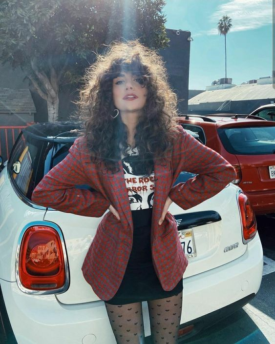
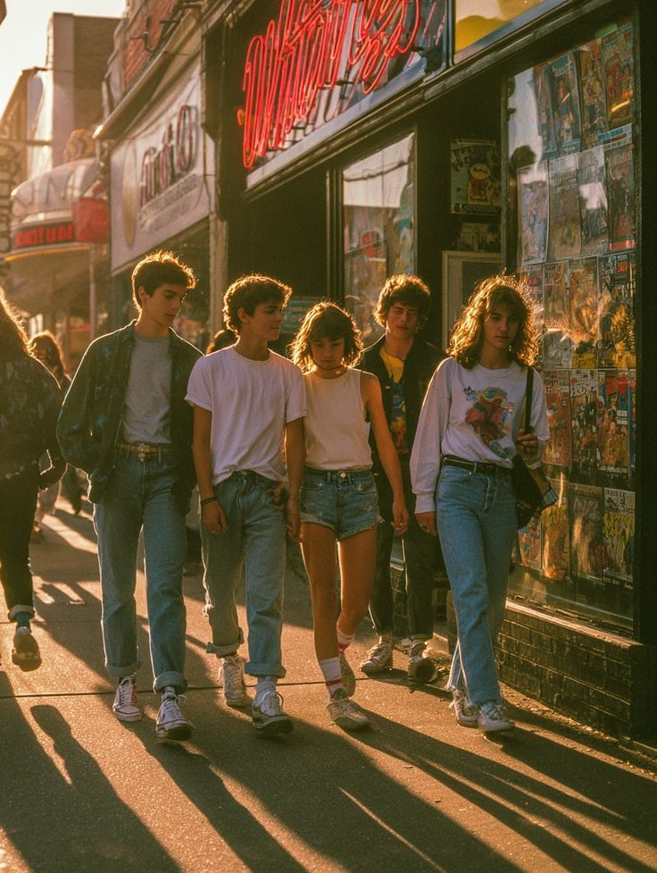
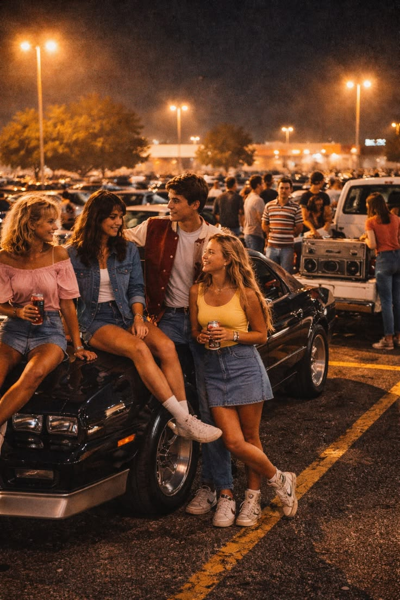
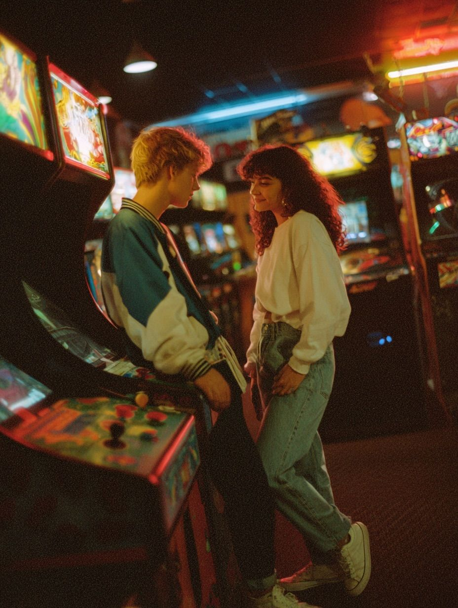

Dress Code
La moda de los 80s es sinónimo de diversión, color y actitud, asi que crea tu look retro para la noche.

Neon pink, verde fosforescente, naranja brillante y azul eléctrico
Rayas, cuadros y patrones geométricos atrevidos
Lycra, satén, cuero sintético y tela metálica
Cadenas gruesas, aretes grandes, pulseras de plástico y bandanas
Volumetría, ondas exageradas y colores atrevidos
¡A más brillo, volumen y color, mejor!
👗
Vestido brillante, leggins metálicos, botas altas y mucho brillo. Busca detalles secuenciados o lentejuelas.
✨
Top neón ajustado con cintura marcada, falda de tubo y accesorios que contrastan. Lleva pulseras de plástico apiladas.
🎸
Cuero, cadenas, botas negras, cabello voluminoso teñido. ¡Crea un look rebelde y atrevido!
🏃♀️
Leotardo ajustado, pantalones cortos brillantes, bandana en la cabeza. El look perfecto de aeróbic de los 80s.
🎩
Traje oversized con hombreras marcadas, camisa colorida o estampada, corbata ancha. Agrega gafas de espejo.
👟
Sudadera de colores brillantes, pantalones deportivos ajustados, tenis de diseño retro. Perfecto y cómodo.
🏖️
Chaqueta de saco en colores pastel (rosa, turquesa), camiseta blanca por debajo, pantalón claro. Estilo desenfadado.
🎸
Camiseta de banda, chaleco de cuero, pantalón negro ajustado, botas. Lleva cadenas y brazaletes metálicos.
Wacha estos ejemplos para guiarte en tu outfit retro



Recuerda que los 80s son sinónimo de exceso. A más brillo, volumen y color, mejor.
Combina elementos de diferentes sub-estilos de los 80s para tu look único.
Las pulseras, collares, aretes y gafas hacen la diferencia.
La moda de los 80s es sobre expresión y diversión. ¡Sé tú mismo con actitud retro!